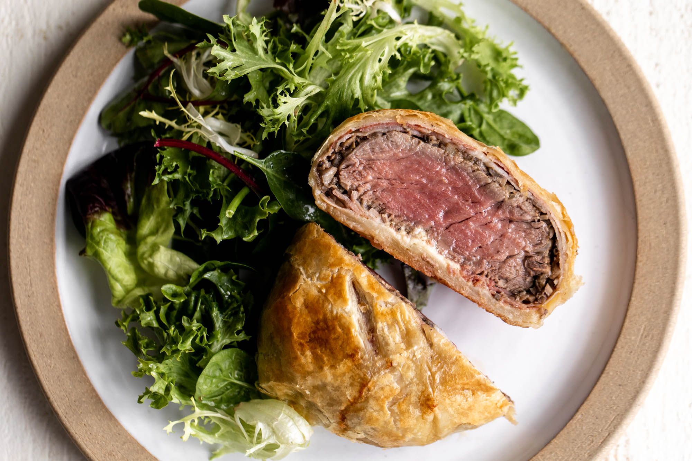

Beef Wellingtons

Description
Beef Wellington is a classic and luxurious dish that features beef tenderloin coated with a layer of flavorful ingredients, then wrapped in puff pastry and baked until golden. The dish is known for its elegant presentation and rich taste. It is often served with sauces like a red wine reduction or a mushroom sauce
This dish has a reputation for being a challenging but rewarding recipe, making it a popular choice for special occasions and festive meals.
Ingredients
- 2 to 3 pounds beef tenderloin (center-cut)
- Salt and black pepper, to taste
- 2 tablespoons olive oil
- 3 tablespoons Dijon mustard
- 8 to 10 slices of prosciutto or Parma ham
- 1 pound puff pastry, thawed if frozen
- 2 tablespoons all-purpose flour (for rolling out the pastry)
For the Mushroom Duxelles:
- 2 tablespoons unsalted butter
- 1 pound mushrooms (e.g., button or cremini), finely chopped
- 2 cloves garlic, minced
- Salt and black pepper, to taste
- 1/4 cup dry white wine
- 2 tablespoons fresh parsley, chopped
Steps
- Prepare the Beef:
- Season the beef tenderloin with salt and pepper.
- Heat olive oil in a skillet over high heat. Sear the beef on all sides until browned. Remove from heat and let it cool. Brush the beef with Dijon mustard.
- Prepare the Mushroom Duxelles:
- In the same skillet, melt butter over medium heat. Add chopped mushrooms and garlic. Cook until the mushrooms release their moisture and the mixture becomes dry.
- Season with salt and pepper, add white wine, and cook until the wine evaporates.
- Stir in chopped parsley, then let the mushroom mixture cool.
- Assemble the Wellington:
- Lay out a sheet of plastic wrap and arrange the prosciutto slices on it, slightly overlapping.
- Spread the mushroom duxelles over the prosciutto.
- Place the beef on top and roll it up tightly using the plastic wrap. Chill in the refrigerator for 15-20 minutes.
- Roll Out the Pastry:
- On a lightly floured surface, roll out the puff pastry to a size that can completely wrap the beef.
- Assemble and Bake:
- Unwrap the beef from the prosciutto and place it in the center of the pastry.
- Fold the pastry over the beef and seal the edges. Brush the pastry with the egg wash.
- Place the wrapped beef on a baking sheet and bake in a preheated oven at 400°F (200°C) for about 25-30 minutes or until the pastry is golden brown.
- Rest and Serve:
- Allow the Beef Wellington to rest for 10 minutes before slicing.
- Serve slices with your favorite sauce, such as a red wine reduction or a mushroom sauce.